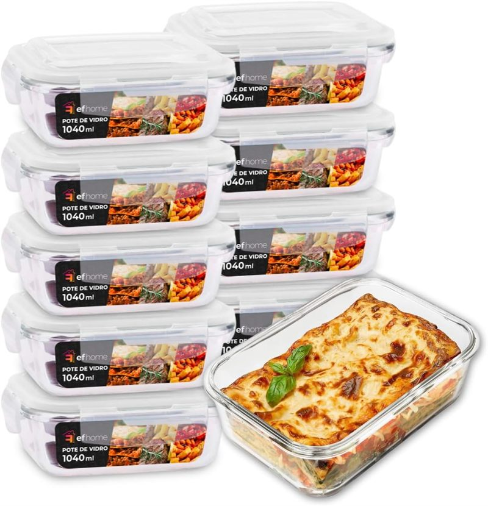
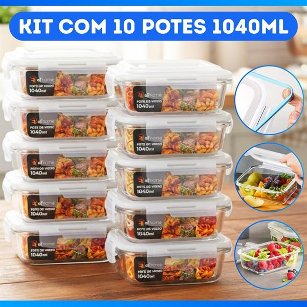
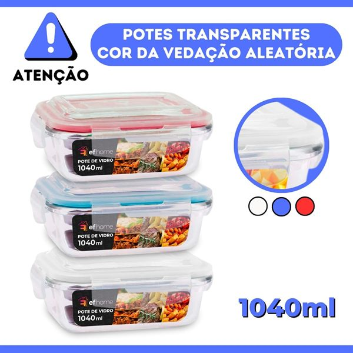
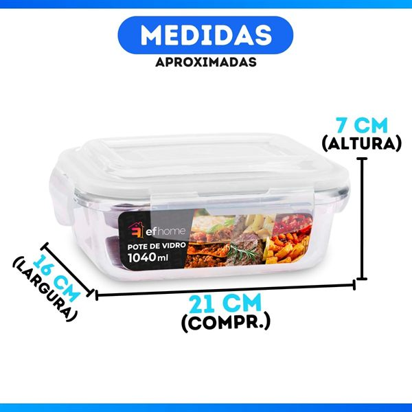
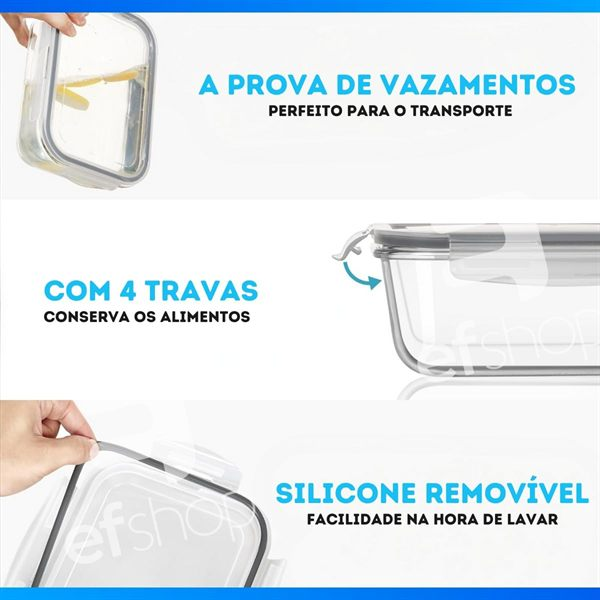
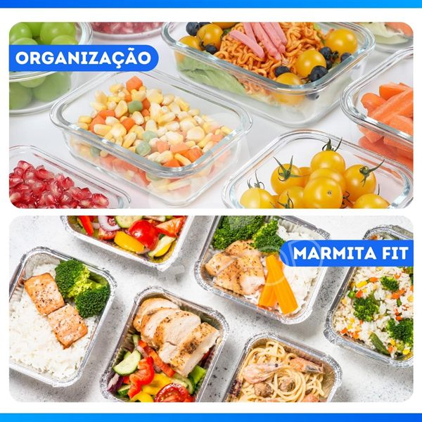
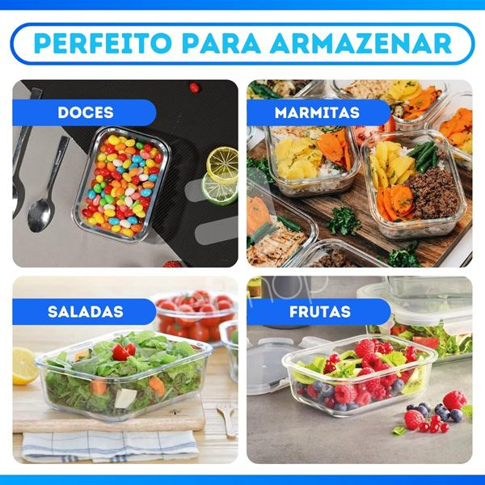
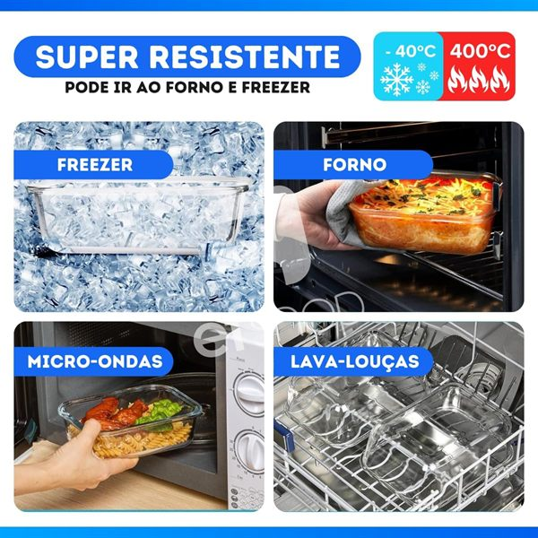
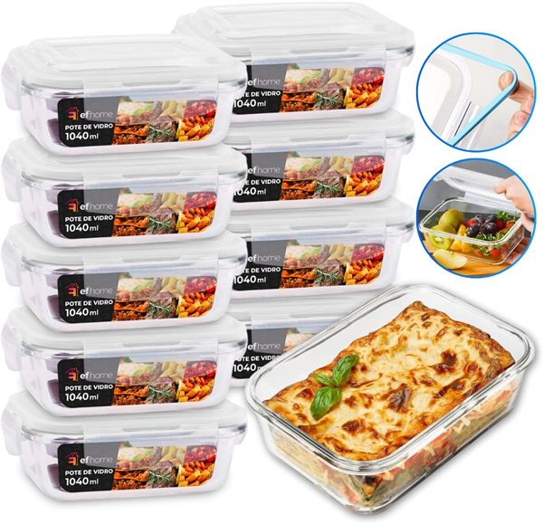

★★★★★
Produto de ótima qualidade
Os potes são muito bons, material resistente e tamanho ideal. Vieram bem embalados e chegaram em perfeito estado. Recomendo o produto.
Vidro borossilicato resistente a microondas. Tampa com 4 travas que vedam ar, odor e bactérias.

Os 4 motivos que aparecem nas avaliações verificadas dos compradores
Material resistente a choques térmicos. Não absorve odor nem mancha com tomate, curry ou alho.
Vedação contra ar, umidade e bactérias. Alimento dura mais e a geladeira não cheira a nada.
Aqueça a comida no próprio pote. Tire só a tampa antes de aquecer e está pronto.
Kit completo para marmita semanal, grãos, cereais e sobras. Empilháveis e transparentes.
Imagens reais do anúncio na Amazon








| Quantidade | 10 potes |
|---|---|
| Capacidade unitária | 1.040 ml |
| Material | Vidro borossilicato |
| Cor | Transparente |
| Formato | Retangular |
| Tampa | Hermética com 4 travas |
| Resistência | Compatível com microondas (sem a tampa) |
| Marca | Clicando e Comprando |
| Vendedor | Brincalar Presentes (Amazon.com.br) |
Avaliações reais publicadas na página do produto na Amazon · 4,8 de 5 estrelas
Os potes são muito bons, material resistente e tamanho ideal. Vieram bem embalados e chegaram em perfeito estado. Recomendo o produto.
Chegaram em bom estado, mesmo a embalagem não sendo das melhores. Os potes são de ótima qualidade.
Chegou dentro do prazo. Produto excelente. Super recomendo a compra.
Excelente produto, muito boa qualidade e o preço muito bom!
Qualidade muito boa, com fechamento bem hermético.
Não fecha totalmente. Se balançar pode vazar, mas serve para alimentos sem líquidos.
4,8★ em avaliações verificadas · Frete para todo o Brasil
Ver oferta na Amazon